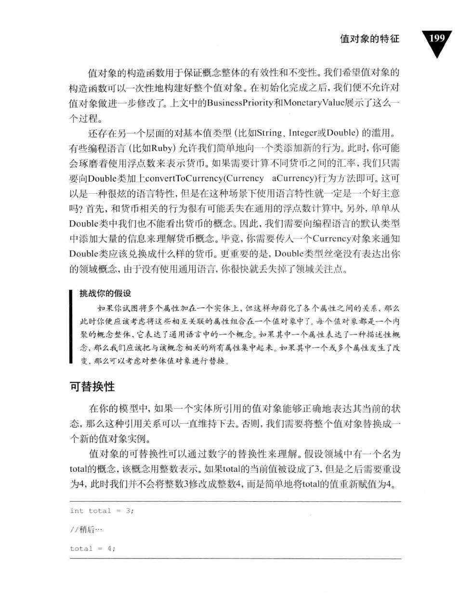
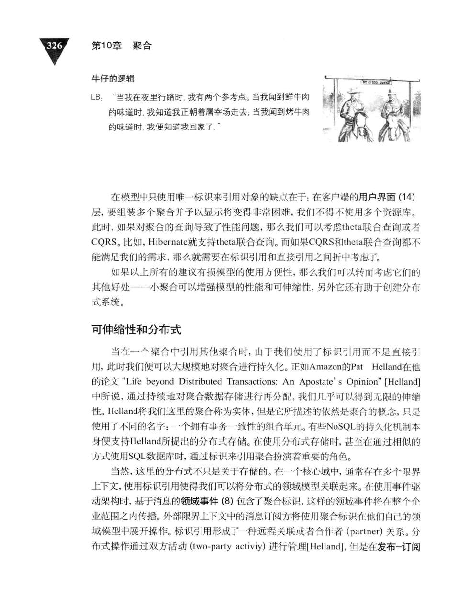
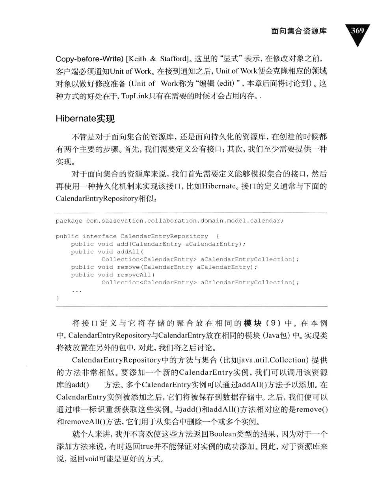
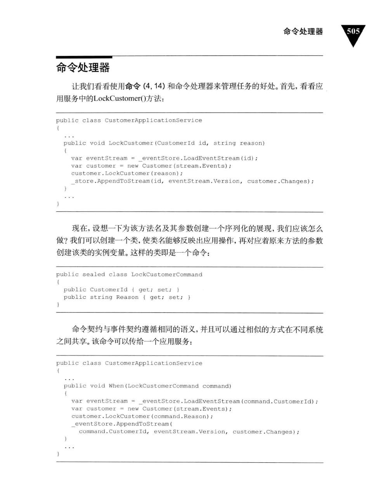

一个计算过程

前言


第1章 DDD入门

我能DDD吗？


为什么我们需要DDD


如何DDD


使用DDD的业务价值


实施DDD所面临的挑战


虚构的案例，真实的实践

本章小结
总览

总览
工作中的子域和限界上下文


将关注点放在核心域上

战略设计为什么重要
现实世界中领域和子域


理解限界上下文

限界上下文不仅仅只包含模型

限界上下文的大小

与技术组件保持一致
示例上下文
协作上下文

身份与访问上下文

敏捷项目管理上下文

本章小结


上下文映射图为什么重要

上下文映射图为什么重要
绘制上下文映射图

产品和组织关系


映射3个示例限界上下文


本章小结
第4章 架构
采访一个成功的CIO

分层


依赖倒置原则


六边形架构（端口与适配器）


面向服务架构


REST作为一种架构风格

REST作为一种架构风格
RESTful HTTP服务器的关键方面

RESTful HTTP客户端的关键方面

REST和DDD
命令和查询职责分离——CQRS


命令和查询职责分离——CQRS
CQRS的各个方面


处理具有最终一致性的查询模型
事件驱动架构

管道和过滤器


长时处理过程（也叫Saga）


事件源
数据网织和基于网格的分布式计算
数据复制
持续查询
持续查询
分布式处理

本章小结
为什么使用实体


为什么使用实体
唯一标识
用户提供唯一标识
应用程序生成唯一标识


持久化机制生成唯一标识


另一个限界上下文提供唯一标识

标识生成时间

委派标识

标识稳定性


发现实体及其本质特征
揭开实体及其本质特征的神秘面纱
挖掘实体的关键行为


角色和职责


创建实体


验证


本章小结
本章小结
第6章 值对象

值对象的特征
不变性
不变性
概念整体


可替换性

值对象相等性

无副作用行为

最小化集成

用值对象表示标准类型


测试值对象


实现


持久化值对象

拒绝由数据建模泄漏带来的不利影响
ORM与单个值对象

多个值对象序列化到单个列中

使用数据库实体保存多个值对象


使用联合表保存多个值对象

ORM与枚举状态对象

本章小结
第7章 领域服务

什么是领域服务（首先，什么不是领域服务）
请确定你是否需要一个领域服务
建模领域服务


独立接口有必要吗

一个计算过程
转换服务

测试领域服务

测试领域服务
本章小结
何时/为什么使用领域事件
何时/为什么使用领域事件
建模领域事件

创建具有聚合特征的领域事件
身份标识

发送方

发送方
订阅方

消息设施的一致性
消息设施的一致性
自治服务和系统

容许时延

事件存储


以REST资源的方式发布事件通知
以REST资源的方式发布事件通知
通过消息中间件发布事件通知

实现
发布NotificationLog

发布基于消息的事件通知


本章小结
通过模块完成设计


通过模块完成设计
领域模型的命名规范


领域模型的命名规范
敏捷项目管理上下文中的模块


其他层中的模块
先考虑模块，再是限界上下文

本章小结
第10章 聚合

在Scrum核心领域中使用聚合
第一次尝试：臃肿的聚合

第二次尝试：多个聚合

原则：在一致性边界之内建模真正的不变条件

原则：设计小聚合

不要相信每一个用例

原则：通过唯一标识引用其他聚合

通过标识引用使多个聚合协同工作

建模对象导航性
可伸缩性和分布式

原则：在边界之外使用最终一致性
谁的任务？

打破原则的理由


重新思考设计
估算聚合成本
常见用例场景
内存消耗

探索另外的设计
实现最终一致性

这是Scrum团队成员的任务吗？

实现

创建具有唯一标识的根实体

优先使用值对象

使用迪米特法则和“告诉而非询问”原则


乐观并发
避免依赖注入
本章小结

领域模型中的工厂
领域模型中的工厂
聚合根中的工厂方法
创建CalendarEntry实例


创建Discussion实例

领域服务中的工厂


本章小结


第12章 资源库
面向集合资源库

Hibernate实现



TopLink实现

面向持久化资源库


Coherence实现


MongoDB实现


额外的行为

管理事务


类型层级

类型层级
资源库 vs 数据访问对象（DAO）
测试资源库


以内存实现进行测试

本章小结

集成基础知识

集成基础知识
跨系统边界交换信息


跨系统边界交换信息
通过REST资源集成限界上下文

实现REST资源


使用防腐层实现REST客户端

从Scrum的产品负责人和团队成员处得到持续通知


从Scrum的产品负责人和团队成员处得到持续通知
你能处理这样的职责吗？


长时处理过程，以及避免职责


长时处理过程的状态机和超时跟踪器

设计一个更复杂的长时处理过程


当消息机制或你的系统不可用时

本章小结
第14章 应用程序


用户界面

渲染领域对象
使用调停者发布聚合的内部状态
使用调停者发布聚合的内部状态
通过领域负载对象渲染聚合实例
聚合实例的状态展现

处理不同类型的客户端
处理不同类型的客户端
渲染适配器以及处理用户编辑

示例应用服务


示例应用服务
解耦服务输出
组合多个限界上下文


基础设施

企业组件容器


本章小结
附录A 聚合与事件源：A+ES
应用服务内部


命令处理器


Lambda语法
并发控制

性能

性能
实现事件存储

关系型持久化


BLOB持久化

专注的聚合

读模型投射
增强事件


增强事件
工具和模式

事件序列器

值对象

值对象
协议生成


单元测试和需求规范

事件源和函数式语言

参考文献